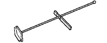
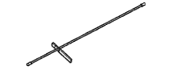
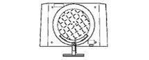
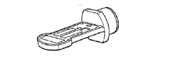

Front Wheel Alignment Preparation [Adjustment]
| 09722-30010 | Tire Clamp Compensator |
 | MB-40B-21 | Brake Pedal Depressor Supplied by Banzai Ltd. |
 | BPD-10W | Brake Pedal Depressor Supplied by Iyasaka Co., Ltd. |
 | 2046-08 | Dial Indicator (10mm) Supplied by Banzai Ltd. |
 | MB-35K | Turning Radius Gauge Supplied by Banzai Ltd. |
 | MB-40E | Camber Caster Kingpin Gauge Supplied by Banzai Ltd. |
 | MB-56FK | Toe-in Gauge Supplied by Banzai Ltd. |
| CCG-3 | Camber Caster Kingpin Gauge Supplied by Iyasaka Co., Ltd. | |
| TG-XU | Toe-in Gauge Supplied by Iyasaka Co., Ltd. |
| TM-110 | Dial Indicator (10mm) Supplied by Iyasaka Co., Ltd. |
| TRG-3 | Turning Radius Gauge Supplied by Iyasaka Co., Ltd. | |
 | AA-828 | Roller Probe Supplied by Banzai Ltd. and Iyasaka Co., Ltd. |
 | AG-8006 | Tire Pressure Gauge Supplied by Banzai Ltd. and Iyasaka Co., Ltd. |
 | MB-B | Magnetic Base Supplied by Banzai Ltd. and Iyasaka Co., Ltd. |
 | QL-100N | QL Torque Wrench (100N) Supplied by Banzai Ltd. and Iyasaka Co., Ltd. |
| QL-200N | QL Torque Wrench (200N) Supplied by Banzai Ltd. and Iyasaka Co., Ltd. |